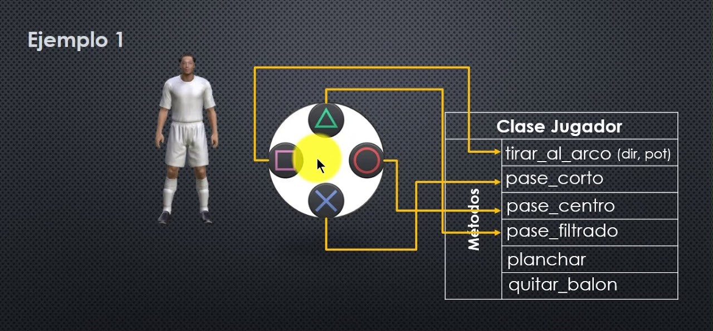
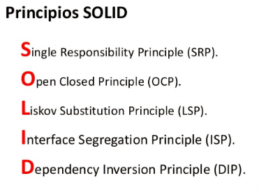
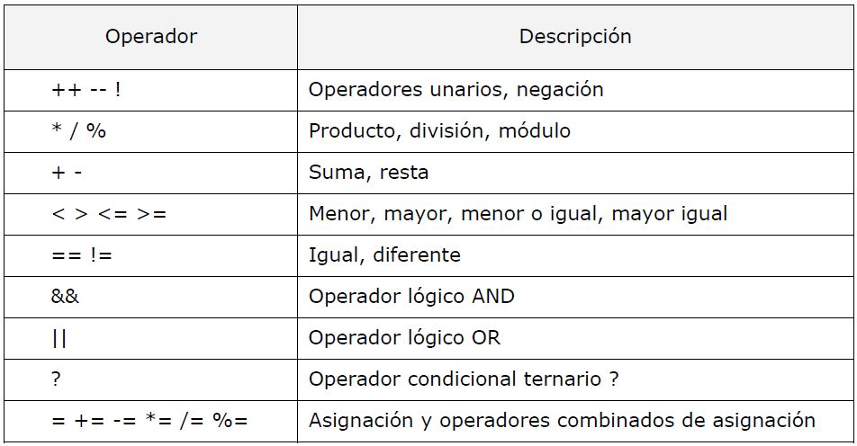
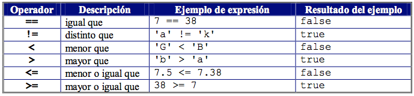

||| Programacion Orientada a Objetos ||| Metodología SCRUM ||| Los Principios SOLID ||| Operadores Matematicas en JAVA ||| Operadores Relacionales en JAVA |||
Presiona "aqui" para saber mas de Programacion Orientada a Objetos
¿Qué es la Programación Orientada a Objetos?
La programación orientada a objetos también conocida como POO es un forma de programar objetos o mejor dicho variables en JAVA, cada objeto es una instancia de su clase.
Estan dos partes muy importante en POO
Atributos
- Nombres
- Apellidos
- Correo
- Contraseña
Metodología
- Editar perfil
- Iniciar sesión
- Crear cuenta
- Cambiar contraseña
Un ejemplo de la programación orientada a objetos:

Click "aquí" para saber más de SCRUM
¿Qué es Metodología SCRUM?
Es una forma de trabajo en grupo la cual su función es ser rápido, Agil y así como grupo poder hacer todas las cosas en el tiempo que se establece para terminar las tareas.
En esta metodología existen distintos puestos de trabajo como:
- Product Owner
Es quien se encarga de presentar el producto con el cliente a quien se le venderá el producto.
- Scrum Master
Es quien se encarga de ver que el producto este y vaya en buen estado y se encarga también de que todos trabajen.
- Scrum Team
Ellos son un grupo que es el que se encarga de crear el producto y hacer todo el trabajo en el tiempo estimado.
Click "aquí" para saber más de SOLID
¿Cuáles son los principios SOLID?
Son las iniciales que corresponden a:
- Principios de responsabilidad unica.
- Principio abierto y cerrado.
- Principio de Sustitución
- Principio de segregación de interfaz
- Principio de inversion de dependencia

Click "aqui" Operadores Matemáticos en Java
¿Operadores Matemáticos en Java?
Son aquellos que nos sirven como para hacer una suma, resta y multiplicación. Con esto tenemos una gran utilidad para hacer bastantes variables y poder hacer operaciones matematicas.

Operadores Relacionales en Java
¿Cuáles Operadores Racionales en Java?
Son aquellos que nos pueden ayudar como los simbolos de menor y mayor que, gracias a esto podemos declarar variables con un valor mayor o menor.
Estos son los símbolos de Operadores Racionales en Java que tenemos que tenr en cuenta:
